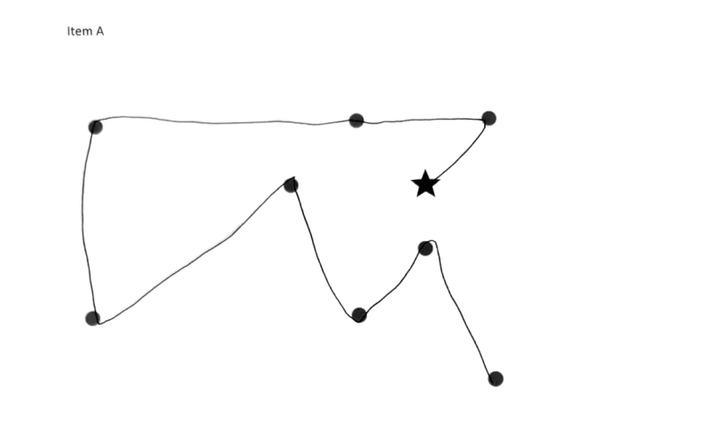
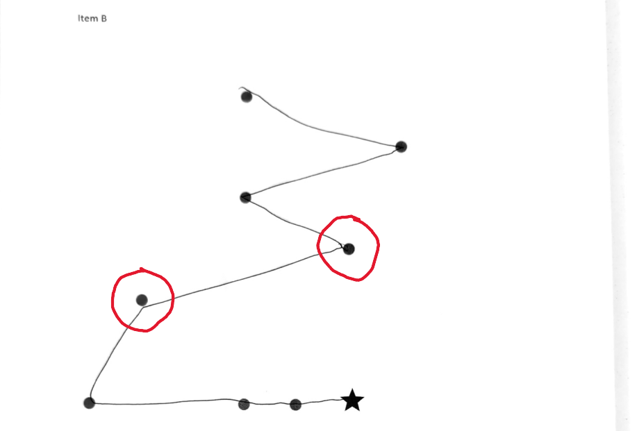
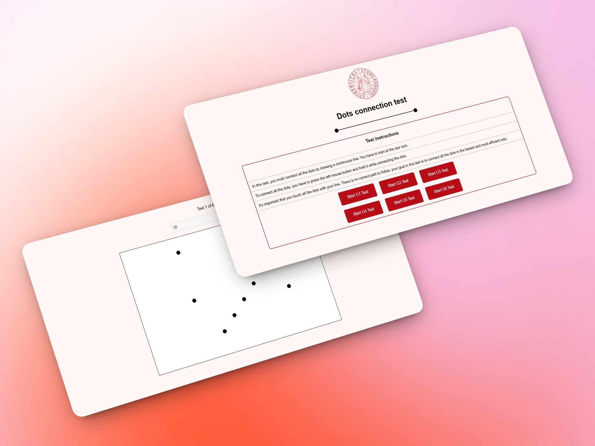

ElectoApp
Creation of a mobile application to discover affinities with political positions and Spanish political parties.

Overview
This website was created to support psychological research conducted by a student and a professor of psychology at the University of Padua. They administered paper-based dot-connection tests to other students.
Problem & Goals
The paper-based format caused accuracy issues: completion times were not precise, students occasionally skipped dots, and errors required repeating the test. Data transfer to CSV format was also time-consuming.
The goals were to create a product capable of being accurate in calculating completion times, avoid common errors made by students and minimize their impact on the results, facilitate data collection in CSV format, and open the possibility of sending these tests to universities in other countries to collect data.
Process
Research & Observation
The first step was to meet with the researchers to discuss and understand what kind of data was important and why. Additionally, observing a test in progress allowed me to see and confirm which key information needed to be obtained and to identify some of the issues that were occurring.


Final Outcome
You can access the website here: Dots Connection Test

The final system eliminated timing inaccuracies, prevented skipped-dot errors, and automatically generated CSV-ready datasets, significantly reducing administrative work for researchers.
Reflection
Working on this project allowed me to experience how design directly impacts research accuracy. Seeing how a small interaction detail could influence data quality made me approach every decision more carefully.
I’m especially proud of transforming a manual process into a system that supports both researchers and students. In future iterations, I would focus on expanding accessibility and testing the interface in different environments.